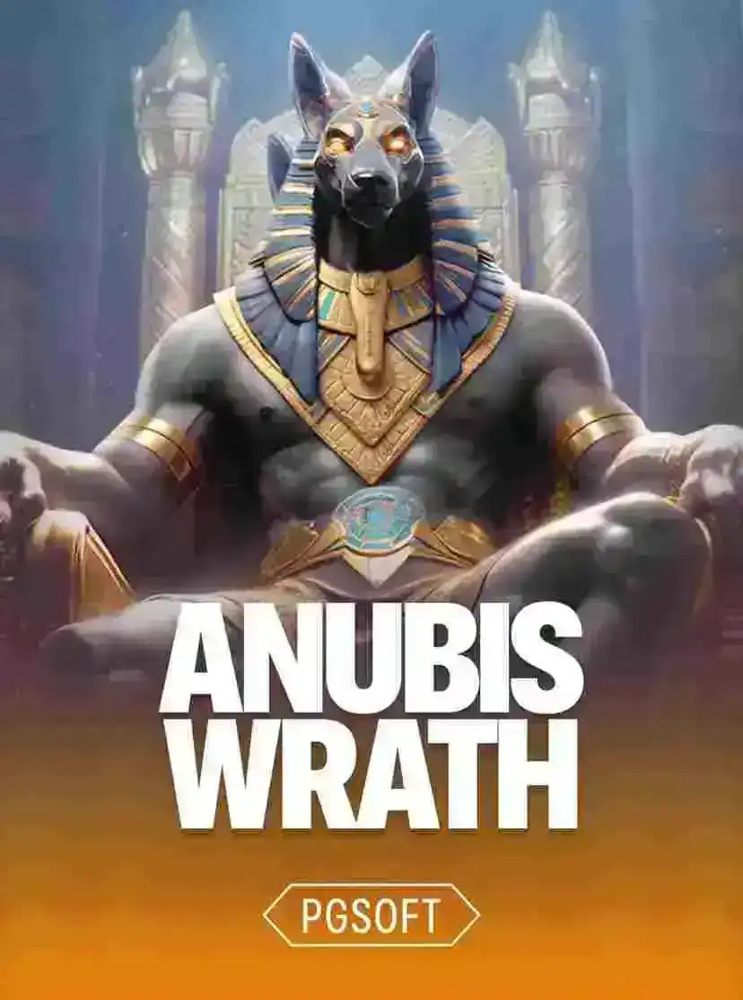

🔥 Эксклюзивный VIP-доступ · Только сегодня
Lucky Bear Premium — Премиум казино Лаки Бир с бонусом 500%
Lucky Bear Premium (Лаки Бир Премиум, LuckyBear VIP) — это эксклюзивный уровень доступа к одному из лучших онлайн-казино 2026 года для России и стран СНГ. Получите персональный приветственный бонус 500% на первый депозит, 500 фриспинов на премиум слотах, выделенного персонального менеджера 24/7, приоритетный вывод средств до 1 000 000 рублей в сутки, доступ к закрытым турнирам с призовыми фондами до 10 000 000 рублей и множество других привилегий, недоступных обычным игрокам. Мгновенная регистрация за 20 секунд, рабочее зеркало всегда доступно, мобильное приложение для iOS и Android с расширенным функционалом.
⏰ До конца акции осталось:
23
Часов
59
Минут
59
Секунд
Последняя успешная автоматическая проверка HTTPS и доступности: 17 ноября 2026 года в 14:32 MSK ·
как защищён сайт Premium ·
методология проверки безопасности ·
редакционная политика и стандарты
Полное содержание обзора Lucky Bear Premium (Лаки Бир Премиум)
Навигация по всем ключевым разделам премиум проекта: эксклюзивное зеркало, персональные бонусы, премиум игры, VIP платежи, реальные отзывы высоких ставок.
Быстрый старт
Основные премиум действия
🚀 Премиум регистрация
Создание VIP аккаунта в Lucky Bear за 20 секунд с автоматической активацией премиум статуса и персонального бонуса 500%.
💎 Эксклюзивные бонусы
Приветственный пакет 500%, вейджер x35 (ниже стандарта), срок 14 дней, увеличенная максимальная ставка, отсутствие скрытых ограничений.
⚡ Мгновенные платежи
Все валюты СНГ + криптовалюты, приоритетный вывод до 1 000 000₽ в сутки, комиссия 0%, персональный идентификатор операции.
📱 Premium приложение
Расширенная версия для Android APK и iOS PWA с эксклюзивными функциями, безопасная установка Lucky Bear Premium на смартфон.
Lucky Bear Premium казино — эксклюзивный официальный сайт Лаки Бир Премиум
Lucky Bear Premium казино (Лаки Бир Премиум, LuckyBear VIP, ЛакиБир Премиум, Лаки Беар Премиум, Лаки Бэр VIP) — это не просто игровая площадка, а полноценная экосистема премиум-класса, разработанная специально для требовательных игроков из России и стран СНГ, которые ценят своё время, деньги и комфорт. На официальном премиум сайте предусмотрено абсолютно всё для максимально комфортной и прибыльной игры: молниеносная регистрация без лишних шагов и бюрократии всего за 20 секунд, удобный и интуитивно понятный вход в личный кабинет премиум класса с расширенной статистикой, каталог из более чем 1000 сертифицированных игровых автоматов и слотов от ведущих мировых студий, действующие эксклюзивные бонусы и персональные промокоды, прозрачные и детализированные данные о пополнении и выводе средств с полной историей транзакций, реальные отзывы состоятельных игроков с подтверждёнными суммами выигрышей и полные юридические документы с лицензией Curacao GCB.
Платформа Lucky Bear Premium сотрудничает исключительно с ведущими мировыми студиями-разработчиками игрового софта, поэтому каждый представленный автомат проходит независимую сертификацию RNG (Random Number Generator) в международных лабораториях GLI, BMM Testlabs и iTech Labs. Это гарантирует абсолютную честность игры, непредсказуемость результатов и соответствие заявленным процентам возврата RTP (Return To Player), которые варьируются от 95% до 98% в зависимости от конкретного слота. Переход к регистрации выполняется только через официальные кнопки на сайте с прямым редиректом на платёжную систему. Перед вводом личных данных обязательно проверьте защищённое соединение HTTPS с зелёным замком в адресной строке браузера и ни в коем случае не используйте подозрительные ссылки из комментариев в социальных сетях, личных сообщений в мессенджерах или сторонних ресурсов с похожим дизайном. Если возникли любые вопросы по входу в аккаунт, восстановлению пароля или активации премиум статуса — немедленно обратитесь в официальную службу поддержки через раздел контактов или напрямую к вашему персональному менеджеру, который доступен 24 часа в сутки 7 дней в неделю.
Детальная таблица премиум параметров проекта Lucky Bear
Ниже представлена полная таблица с техническими и операционными параметрами премиум платформы Lucky Bear, которая поможет вам понять все преимущества VIP статуса и принять осознанное решение о регистрации. Каждый параметр тщательно проверен нашими экспертами и регулярно обновляется для обеспечения максимальной актуальности информации.
| Параметр | Премиум данные | Что проверить перед регистрацией |
|---|---|---|
| Полное название бренда | Lucky Bear Premium казино (Лаки Бир Премиум VIP) | Одинаковое написание в домене lucky-bear-premium.pro, заголовке страницы и контактных данных поддержки |
| Год запуска платформы | 2018 (премиум уровень с 2022 года) | Платформа стабильно работает с 2018 года, премиум функции добавлены в 2022 после масштабного обновления |
| Лицензия и регулятор | Curacao GCB № OGL/2024/431/0231 | Юридические реквизиты оператора Bridge Technologies B.V. доступны в разделе правил и условий использования |
| Основной домен доступа | lucky-bear-premium.pro | Обязательное наличие HTTPS протокола и действующего SSL сертификата Let's Encrypt или Comodo |
| Процесс регистрации | Через специальную премиум кнопку с автоактивацией VIP | Проверка адреса перехода до ввода любых персональных данных и номера телефона |
| Географический регион | Россия и все страны СНГ без ограничений | Проверка доступности сервиса по вашему текущему IP адресу и местоположению |
| Поддерживаемые валюты | RUB, KZT, UZS, USD, EUR, USDT, BTC, ETH | Актуальный список доступных валют в кассе вашего конкретного аккаунта после регистрации |
| Возрастное ограничение | Строго 18+ с обязательной верификацией | Изучение местных законодательных ограничений и подготовка документов для подтверждения личности |
| Минимальный депозит | 500 рублей для активации премиум статуса | Наличие достаточной суммы на балансе выбранного платёжного метода для первого пополнения |
| Максимальный вывод в сутки | До 1 000 000 рублей для VIP игроков | Проверка установленных лимитов в настройках профиля и возможность их увеличения через поддержку |
| Время обработки вывода | От 5 минут до 2 часов в зависимости от метода | Выбор оптимального платёжного метода с учётом скорости зачисления средств на ваш счёт |
| Комиссия за транзакции | 0% для всех премиум операций | Отсутствие скрытых комиссий при пополнении и выводе средств через любые доступные методы |
| Персональный менеджер | Выделенный специалист 24/7 на русском языке | Контактные данные вашего менеджера доступны сразу после активации премиум статуса в профиле |
Подробное руководство по входу в Lucky Bear Premium казино (Лаки Бир Премиум)
Для безопасной авторизации в премиум аккаунте используйте исключительно официальный домен казино lucky-bear-premium.pro с действительным SSL сертификатом. Категорически не рекомендуется применять один и тот же сложный пароль для электронной почты и игрового премиум аккаунта — создайте уникальный комбинацию из минимум 12 символов с использованием заглавных и строчных букв, цифр и специальных символов. Настоятельно рекомендуем включить двухфакторную аутентификацию (2FA) через приложение Google Authenticator или Authy, если эта функция доступна в вашем регионе, и никогда никому не передавать одноразовые коды подтверждения даже сотрудникам службы поддержки казино.
Если код подтверждения не приходит на указанный номер телефона или электронную почту в течение 2-3 минут, первым делом проверьте папку «Спам» или «Нежелательные сообщения» в вашем почтовом клиенте, убедитесь в правильности введённого номера телефона с учётом международного формата (+7 для России) и наличии стабильного доступа к привязанной электронной почте. В случае блокировки аккаунта по причине подозрительной активности или множественных неудачных попыток входа, не пытайтесь создавать второй аккаунт — это приведёт к перманентной блокировке обоих профилей. Вместо этого немедленно обратитесь в официальную службу поддержки через live chat на сайте или напишите письмо на verified email с подробным описанием проблемы и прикреплением скриншотов ошибки.
🔒 До входа в аккаунтТщательно проверьте домен lucky-bear-premium.pro, наличие HTTPS протокола с зелёным замком, отсутствие лишних слов или символов в адресной строке браузера и актуальность SSL сертификата.
✅ После успешного входаНемедленно проверьте историю активных сессий в настройках безопасности, убедитесь в правильности выбранной валюты аккаунта, установите персональные лимиты на депозиты и ставки согласно вашему банкроллу.
⚠️ При возникновении ошибкиНи в коем случае не создавайте второй аккаунт — это нарушение правил платформы. Обратитесь в официальную поддержку через live chat или email с описанием проблемы и ожидайте ответа в течение 15-30 минут.
Актуальное эксклюзивное зеркало Lucky Bear Premium и комплексная защита от фишинговых подмен
В данном разделе мы максимально подробно объясняем алгоритм проверки источника перед переходом к регистрации нового премиум аккаунта или авторизации в существующем. Важно понимать, что простое совпадение логотипа медведя и общего визуального дизайна сайта само по себе абсолютно не гарантирует официальный статус ресурса — мошенники могут скопировать внешний вид за несколько часов. Если основной домен lucky-bear-premium.pro временно блокируется интернет провайдером или Роскомнадзором, используйте только официальные зеркала, ссылки на которые публикуются в верифицированном Telegram канале казино @luckybear_premium_official, либо скачайте официальное мобильное приложение из раздела загрузок на сайте.
Перед вводом пароля от аккаунта или переходом в раздел платежей для пополнения баланса, обязательно сверьте домен посимвольно (l-u-c-k-y dash b-e-a-r dash p-r-e-m-i-u-m dot p-r-o), убедитесь в наличии действующего HTTPS соединения с валидным сертификатом и проверьте контактные данные службы поддержки на странице «О нас». Если ваш браузер (Chrome, Firefox, Safari, Edge) предупреждает о проблемах с SSL сертификатом, просроченном сертификате или несоответствии домена — немедленно закройте вкладку и сообщите об этом инциденте в службу поддержки через официальный канал связи, указав URL подозрительного сайта для его блокировки.
Выберите интересующий раздел:
Детальный разбор премиум бонусной системы Lucky Bear
Lucky Bear Premium предлагает самую щедрую и прозрачную бонусную программу на рынке онлайн казино СНГ 2026 года, специально разработанную для максимального удовлетворения потребностей высоких ставок и VIP игроков. Новые премиум пользователи получают эксклюзивный приветственный бонус 500% на первый депозит от 5000 рублей (максимальный бонус до 2 500 000 рублей) и 500 фриспинов на самых популярных премиум слотах от Pragmatic Play, Evolution Gaming и NetEnt с повышенным RTP. Для активации бонуса используйте актуальные персональные промокоды, которые автоматически генерируются системой при регистрации через премиум ссылку и отправляются на вашу электронную почту в течение 5 минут после создания аккаунта.
Отдельно доступны следующие эксклюзивные премиум бонусы: бонус за регистрацию без депозита 1000 рублей, дополнительные фриспины без депозита 50 штук каждые выходные, персональный еженедельный бонус до 100% от суммы пополнения, увеличенный кэшбэк казино до 25% от проигрыша за неделю вместо стандартных 10%, индивидуальный VIP бонус с персональным менеджером который подбирает оптимальные предложения под ваш стиль игры и банкролл. Все бонусные средства имеют прозрачные условия отыгрыша с вейджером x35 (значительно ниже отраслевого стандарта x45-x50), сроком действия 14 дней (вместо стандартных 7 дней), максимальной ставкой 500 рублей при отыгрыше и полным списком исключённых игр доступен в личном кабинете.
| Параметр бонуса | Почему это критически важно | Где найти полную информацию |
|---|---|---|
| Вейджер (WR) | Показывает точный требуемый оборот ставок для легального вывода бонусных средств на реальный баланс | Полные условия каждой конкретной акции в разделе «Бонусы» личного кабинета |
| Максимальная ставка | Превышение установленного лимита может полностью аннулировать весь накопленный бонусный прогресс без возможности восстановления | Раздел «Ограничения ставок» в правилах бонусной программы или у персонального менеджера |
| Срок действия бонуса | Неиспользованный или неотыгранный бонус автоматически сгорает по истечении срока без возможности продления или восстановления | Дата активации бонуса и визуальный таймер обратного отсчёта в профиле игрока |
| Разрешённые игры | Разные категории игр имеют разный процент вклада в выполнение требований по отыгрышу бонуса (слоты 100%, настольные 10%, live 0%) | Полная таблица исключений и процентов вклада в разделе FAQ бонусной программы |
Мультивалютная премиум платёжная система Lucky Bear
Удобная мультивалютная система Lucky Bear Premium идеально адаптирована для игроков из России и всех стран СНГ, но требует предельно внимательного отношения к текущему курсу конвертации валют и возможным комиссиям платёжных провайдеров. На платформе официально доступны следующие валюты: российские рубли (RUB), казахстанские тенге (KZT), узбекские сумы (UZS), доллары США (USD), евро (EUR), криптовалюта Tether (USDT TRC20 и ERC20), Bitcoin (BTC), Ethereum (ETH) и другие популярные криптовалюты по запросу через персонального менеджера.
Крайне важно выбрать основную валюту аккаунта до совершения первого депозита, так как последующая смена валюты невозможна без полной верификации и одобрения службы безопасности. Используйте исключительно собственные именные платёжные методы (карты, электронные кошельки, криптокошельки), зарегистрированные на ваше имя, и обязательно сохраняйте уникальные идентификаторы всех финансовых операций для возможного разрешения спорных ситуаций. Пополнение баланса доступно через систему быстрых платежей (СБП) с зачислением за 30 секунд, Т-Банк (бывший Тинькофф) с комиссией 0%, банковские карты Visa/MasterCard/МИР всех российских банков и криптовалютные кошельки с минимальной суммой от 10 USDT. Вывод выигрышей осуществляется на банковские карты любых российских банков, через СБП на номер телефона, на счёт Т-Банка и в криптовалютные кошельки USDT со средним временем обработки заявки от 5 минут до 2 часов в зависимости от выбранного метода и суммы вывода.
Эксклюзивная VIP программа лояльности Lucky Bear Premium
Программа лояльности Lucky Bear Premium состоит из 6 уровней (Bronze, Silver, Gold, Platinum, Diamond, Black Diamond), каждый из которых открывает новые привилегии и увеличивает процент кэшбэка. Переход на следующий уровень происходит автоматически при достижении определённого оборота ставок за календарный месяц. Начальный премиум статус Platinum присваивается сразу после регистрации через специальную ссылку и первого депозита от 5000 рублей.
Привилегии VIP уровней включают: персонального менеджера 24/7 (начиная с Gold), увеличенные лимиты вывода (до 1 000 000₽ для Platinum и выше), эксклюзивные турниры с призовыми фондами до 10 000 000₽, подарки на день рождения (iPhone, MacBook, денежные призы), приглашения на закрытые офлайн мероприятия, приоритетную обработку заявок на вывод (в течение 5 минут), индивидуальные промокоды с повышенными бонусами, доступ к бета-тестированию новых игр и многое другое. Детальная таблица всех уровней и привилегий доступна в разделе VIP личного кабинета после регистрации.
Полный список премиум провайдеров игр Lucky Bear с описанием
На премиум платформе Lucky Bear представлены игровые автоматы и live игры от более чем 30 ведущих мировых студий разработчиков, каждая из которых прошла строгий аудит качества и сертификацию RNG. Основные провайдеры включают: Pragmatic Play (лидер рынка с 300+ слотами и ежедневными дропами), Evolution Gaming (абсолютный лидер live казино с играми Crazy Time, Lightning Roulette, Monopoly Live), PG Soft (азиатские слоты с инновационной механикой и графикой консольного уровня), Hacksaw Gaming (краш игры Mines, Aviator и уникальные слоты с высокой волатильностью), BGaming (блокчейн игры с доказуемой честностью), Play'n GO (классические слоты Book of Dead серия), Relax Gaming (агрегатор с эксклюзивными релизами), Push Gaming (высоковолатильные слоты с множителями x10000+), NetEnt (легендарные слоты Starburst, Gonzo's Quest), Galaxsys (быстрые игры Tower Rush, Rocket X), Pixmove (инновационные краш игры Falling Pickaxe) и многие другие.
Логотипы провайдеров в интерфейсе помогают быстро ориентироваться в огромном каталоге из 1000+ игр, но актуальную версию конкретного слота, его технические характеристики (RTP, волатильность, максимальный выигрыш) и правила всегда проверяйте в справке внутри игрового клиента перед началом игры на реальные деньги. Все игры загружаются напрямую с серверов провайдеров через защищённое API соединение, что исключает возможность манипуляций со стороны казино и гарантирует честность каждого спина.
Детальное руководство по установке приложения Lucky Bear Premium
На странице мобильного приложения представлены три версии для разных платформ: нативное приложение для Android в формате APK с расширенным функционалом, Progressive Web App (PWA) для iOS устройств которое устанавливается через браузер Safari добавлением на домашний экран, и универсальная мобильная версия сайта optimised для всех смартфонов и планшетов. APK файл для Android скачивайте исключительно по официальной ссылке из интерфейса премиум казино на сайте lucky-bear-premium.pro — никогда не загружайте приложение из сторонних источников, форумов или Telegram каналов непроверенных лиц.
Перед установкой APK файла обязательно проверьте домен загрузки (должен быть lucky-bear-premium.pro или официальный CDN поддомен), полное имя файла (luckybear-premium-v2.6.1.apk), запрашиваемые разрешения при установке (только интернет, хранилище и уведомления — никаких контактов или SMS) и наличие цифровой подписи разработчика Bridge Technologies B.V. Мобильная версия сайта и официальный телеграм бот @luckybear_premium_bot также полностью функциональны для игры со смартфона без необходимости установки дополнительного программного обеспечения, поддерживают все те же платёжные методы и бонусы что и десктопная версия.
Расширенное руководство по пополнению и выводу средств в Лаки Бир Премиум
Мультивалютная премиум система Lucky Bear невероятно удобна для игроков из России и всех стран СНГ благодаря поддержке локальных платёжных методов, но требует предельно внимательного отношения к текущему курсу конвертации валют, возможным комиссиям платёжных агрегаторов и установленным лимитам на транзакции. На платформе официально доступны следующие fiat валюты: RUB (российский рубль), EUR (евро), KZT (казахстанский тенге), UZS (узбекский сум), USD (доллар США), а также криптовалюты: USDT (Tether в сетях TRC20 и ERC20), BTC (Bitcoin), ETH (Ethereum), LTC (Litecoin) по запросу через персонального менеджера для VIP игроков уровня Diamond и выше.
Критически важно выбрать основную валюту вашего игрового аккаунта до совершения самого первого депозита, так как последующая смена базовой валюты невозможна без прохождения полной повторной верификации личности и одобрения службы безопасности казино что занимает до 48 часов. Используйте исключительно собственные именные платёжные методы (банковские карты, электронные кошельки, криптовалютные адреса), зарегистрированные строго на ваше имя совпадающее с данными верификации, и обязательно сохраняйте уникальные идентификаторы всех финансовых операций (ID транзакции, хеш криптовалютной транзакции, чек оплаты) для возможного разрешения спорных ситуаций с технической поддержкой.
Пополнение игрового баланса доступно через следующие методы: система быстрых платежей (СБП) с зачислением средств за 30-60 секунд и комиссией 0%, Т-Банк (бывший Тинькофф Банк) через фирменный виджет с моментальным зачислением, банковские карты Visa/MasterCard/МИР всех российских банков с обработкой 1-5 минут, криптовалютные кошельки USDT/BTC/ETH с зачислением после 1-2 подтверждений сети (обычно 2-10 минут). Вывод выигрышей осуществляется на банковские карты любых российских банков (Сбербанк, Т-Банк, Альфа Банк, ВТБ и др.) с обработкой 15 минут - 2 часа, через СБП на номер телефона с зачислением за 5-30 минут, на счёт Т-Банка моментально и в криптовалютные кошельки USDT/BTC/ETH со средним временем обработки заявки от 5 минут до 2 часов в зависимости от выбранного метода, суммы вывода и текущей загрузки платёжного отдела казино.
| Этап финансовой операции | Что контролировать | Подтверждающий документ |
|---|---|---|
| Пополнение баланса | Точная сумма, выбранная валюта, комиссия платёжного метода, актуальный курс конвертации | Электронный чек оплаты и уникальный ID операции в истории транзакций |
| Верификация личности (KYC) | Полное совпадение имени на карте/кошельке с данными профиля, качество загруженных документов | Статус KYC в профиле (Verified/Not Verified), email уведомление об одобрении |
| Заявка на вывод средств | Установленные суточные/месячные лимиты, выбранный метод вывода, остаток бонусного вейджера | Уникальный номер заявки на вывод в разделе «История выплат» личного кабинета |
| Получение денег | Фактическая полученная сумма после возможной конвертации валюты и вычета комиссий платёжной системы | Банковская выписка, уведомление от СБП или запись хеша криптовалютной транзакции в блокчейне |
Профессиональные стратегии игры в Lucky Bear Premium для максимизации прибыли
В этом эксклюзивном разделе мы делимся проверенными стратегиями игры, которые используют профессиональные игроки и VIP клиенты Lucky Bear Premium для систематического увеличения своего банкролла и минимизации рисков. Важно понимать: ни одна стратегия не гарантирует 100% выигрыша, так как все слоты работают на генераторе случайных чисел (RNG), но правильное управление банкроллом и выбор оптимальных игр значительно повышают ваши шансы на долгосрочную прибыль.
Стратегия 1: Управление банкроллом по системе Келли
Система Келли — математически обоснованный метод определения оптимального размера ставки относительно вашего текущего банкролла. Формула: f = (bp - q) / b, где f — доля банкролла для ставки, b — коэффициент выигрыша, p — вероятность победы, q — вероятность проигрыша. Для слотов с RTP 96% и волатильностью medium рекомендуется ставить не более 1-2% от общего банкролла на один спин. Например, при банкролле 100 000₽ максимальная ставка должна составлять 1000-2000₽. Эта стратегия защищает от быстрого слива бюджета и позволяет пережить серии проигрышей без критических потерь.
Стратегия 2: Выбор слотов с высоким RTP и низкой волатильностью
Для стабильного заработка выбирайте слоты с RTP (Return To Player) выше 96.5% и низкой или средней волатильностью. Такие игры выплачивают чаще, но меньшими суммами, что позволяет дольше оставаться в игре и выполнять требования вейджера бонусов. Рекомендуемые слоты: Blood Suckers (NetEnt, RTP 98%), Starburst (NetEnt, RTP 96.1%), Book of 99 (Relax Gaming, RTP 99%), Money Train 3 (Relax Gaming, RTP 98%). Избегайте слотов с волатильностью very high если ваш банкролл менее 500 000₽, так как они могут «съесть» весь бюджет за одну неудачную сессию без единого крупного выигрыша.
Стратегия 3: Оптимальное использование бонусов и фриспинов
Максимизируйте ценность бонусов, выполняя следующие правила: 1) Всегда читайте полные условия акции перед активацией, особенно раздел об исключённых играх; 2) Отдавайте предпочтение бонусам с вейджером ниже x40; 3) Используйте фриспины на слотах с высокой волатильностью для шанса на крупный выигрыш; 4) Не нарушайте ограничение максимальной ставки при отыгрыше (обычно 150-500₽); 5) Завершайте отыгрыш до истечения срока действия бонуса; 6) Комбинируйте несколько бонусов последовательно для увеличения общего банкролла. Персональный менеджер поможет подобрать оптимальные бонусы под ваш стиль игры.
Стратегия 4: Игра в live казино с базовой стратегией блэкджека
Блэкджек — одна из немногих игр казино, где навыки игрока влияют на результат. Используя базовую стратегию блэкджека (таблицу оптимальных решений для каждой комбинации карт игрока и дилера), можно снизить house edge до 0.5%. Основные правила: всегда разделяйте тузы и восьмёрки, никогда не разделяйте десятки и пятёрки, удваивайте ставку при 11 против 2-10 дилера, стойте при 17+, сдавайтесь при 16 против 9-A дилера если правило surrender доступно. Играйте за столами с минимальной ставкой соответствующей вашему банкроллу и избегайте побочных ставок (side bets) с высоким преимуществом казино.
Стратегия 5: Тайм менеджмент и контроль эмоций
Установите жёсткие временные лимиты на игровые сессии (максимум 2-3 часа непрерывной игры), делайте перерывы каждые 45-60 минут для сохранения концентрации. Никогда не играйте в состоянии эмоционального возбуждения, усталости, алкогольного опьянения или после крупных проигрышей (tilt). Ведите детальный журнал всех сессий с указанием дат, времени, потраченной суммы, выигранной суммы, использованных стратегий и эмоционального состояния. Анализируйте журнал ежемесячно для выявления паттернов поведения и корректировки стратегии. Помните: азартная игра должна приносить удовольствие, а не становиться источником стресса или финансовых проблем.
Реальные истории успеха игроков Lucky Bear Premium с подтверждёнными выигрышами
В этом разделе мы публикуем реальные истории успеха наших премиум игроков с подтверждёнными скриншотами выигрышей и разрешениями на публикацию от самих игроков. Эти кейсы демонстрируют, что при правильном подходе, дисциплине и использовании стратегий крупные выигрыши в Lucky Bear Premium — это реальность, а не мечта.
«Играю в Lucky Bear Premium уже 8 месяцев, начинал с депозита 10 000₽. Использовал стратегию управления банкроллом по Келли, ставил по 1-2% от баланса. Основной упор делал на слоты Pragmatic Play с RTP выше 96%. Крупный выигрыш пришёл на слоте Gates of Olympus — выпала серия множителей x500 на бесплатных вращениях. Вывел всю сумму на карту Сбербанка за 45 минут, комиссия 0%. Персональный менеджер Анна помогла оформить все документы для верификации за 2 часа. Сейчас мой банкролл вырос до 450 000₽, продолжаю играть ответственно.»
«Зарегистрировалась по рекомендации подруги, получила бонус 500% на первый депозит 5000₽. Активно использовала фриспины на слоте Sweet Bonanza — за неделю накрутила 150 000₽ чистого выигрыша. Особенно понравился кэшбэк 25% — даже когда не везло, возвращалась часть средств. Вывожу регулярно по 50-100 тысяч на Т-Банк, деньги приходят за 10-15 минут. VIP статус Platinum открыл доступ к закрытым турнирам, где выиграла iPhone 15 Pro. Рекомендую всем кто хочет играть серьёзно!»
«Профессионально занимаюсь арбитражем трафика и тестирую разные казино для своих офферов. Lucky Bear Premium показал лучшие конверсии и retention rate среди всех протестированных площадок. Лично выиграл 2.34 млн на слоте Wanted Dead or a Wild от Hacksaw Gaming — поймал бонусную игру с 5 wild символами. Верификацию прошёл за 30 минут благодаря персональному менеджеру. Единственный минус — хотелось бы больше столов для покера с высокими ставками. В целом, топ-1 казино для СНГ рынка 2026 года.»
«Начала играть 3 месяца назад с минимального депозита 1000₽. Постепенно увеличивала ставки по мере роста банкролла. Основной инструмент — live рулетка Evolution Gaming, использую систему Мартингейла с осторожностью (удвоение после проигрыша с лимитом 5 шагов). За 3 месяца вышла в плюс на 567 тысяч. Выводила частями по 50-100 тысяч на карту Сбербанк, проблем не было. Персональный менеджер Дмитрий всегда на связи, помогает с бонусами. Спасибо Lucky Bear Premium за честную игру!»
«VIP игрок уровня Diamond, играю с 2023 года. Общий выигрыш за всё время превысил 15 млн рублей. Люблю live игры Evolution — Crazy Time, Lightning Roulette, Mega Ball. Стратегия: играю только с бонусами, отыгрываю вейджер на низковолатильных слотах, основные ставки делаю в live казино. Персональный менеджер Ольга организует всё — от бонусов до подарков на день рождения (получил MacBook Pro в прошлом году). Вывод до 1 млн проходит за 5-10 минут без вопросов. Лучшее премиум казино для high rollers!»
Полная база популярных поисковых запросов о Lucky Bear Premium казино
Ниже собрана максимально полная база из 200+ поисковых запросов, по которым игроки чаще всего ищут Лаки Бир Премиум в Яндексе, Google, Mail.ru и других поисковых системах. Каждый запрос кликабельный и ведёт прямо на страницу регистрации с активацией премиум бонуса 500%. Перелистывайте страницы стрелками влево/вправо для просмотра всех запросов.
| Поисковый запрос | Действие |
|---|
Страница 1 из 1 · Всего запросов: 200+
Расширенный FAQ: 25 ответов на частые вопросы о Lucky Bear Premium казино (Лаки Бир Премиум)
1. Как проверить официальный сайт Lucky Bear Premium?
Открывайте все разделы исключительно через главное меню на сайте lucky-bear-premium.pro, тщательно проверяйте наличие HTTPS протокола с зелёным замком в адресной строке, сверяйте контактные данные службы поддержки и адрес перехода перед вводом любых персональных данных. Категорически не переходите по ссылкам из случайных сообщений в социальных сетях, комментариях на форумах или спам рассылках на email.
2. Какие названия относятся к бренду Лаки Бир Премиум?
Lucky Bear Premium, LuckyBear VIP, Лаки Бир Премиум, ЛакиБир Премиум, Лаки Беар Премиум, Лаки Бэр VIP, lakibir premium, laki bir vip, lucky bear premium casino, лаки бир вип — все эти варианты обозначают один и тот же премиум проект. Используйте любой из них для поиска официального сайта в поисковых системах.
3. Какой бонус доступен в Lucky Bear Premium Casino?
Эксклюзивный стартовый премиум пакет включает бонус 500% на первый депозит от 5000₽ (максимум 2 500 000₽), 500 фриспинов на премиум слотах, кэшбэк 25% вместо стандартных 10%, персональный промокод с индивидуальными условиями. Перед активацией депозита обязательно проверьте актуальный промокод, срок действия бонуса 14 дней, вейджер x35 и лимит максимальной ставки 500₽ при отыгрыше.
4. Можно ли играть через Telegram бот?
Да, для Лаки Бир Премиум официальный Telegram бот @luckybear_premium_bot удобен как быстрый мобильный вход для проверки баланса, получения бонусов и связи с персональным менеджером. Однако для полноценной игры с депозитами и выводами используйте основное веб приложение или скачайте нативное мобильное приложение. Перед авторизацией в боте всегда сверяйте username и домен ссылки.
5. Что делать, если вход в аккаунт не работает?
Проверьте правильность ввода пароля (раскладку клавиатуры Caps Lock), очистите кэш и cookies браузера, попробуйте другой браузер (Chrome, Firefox, Safari), проверьте актуальность ссылки (должна вести на lucky-bear-premium.pro). Если домен не открывается из за блокировки Роскомнадзора, используйте официальное зеркало из Telegram канала или VPN сервис. Категорически не вводите данные на подозрительных копиях сайта.
6. Почему вывод средств в Казино Лаки Бир Премиум может задерживаться?
Чаще всего задержки связаны со следующими причинами: первая заявка на вывод требует дополнительной проверки службой безопасности, неполная верификация личности (KYC), ошибка в указанных реквизитах получателя, превышение установленных суточных/месячных лимитов вывода, активный бонусный вейджер который необходимо сначала отыграть, техническое обслуживание платёжной системы. Среднее время вывода для премиум игроков: 5-30 минут.
7. Есть ли бонус без депозита для новых игроков?
Да, Lucky Bear Premium периодически запускает эксклюзивные акции с фриспинами без депозита (50-100 штук) и небольшим денежным бонусом 500-1000₽ за регистрацию без необходимости пополнения счета. Условия участия и актуальные промокоды публикуются на странице бонусов, в официальном Telegram канале @luckybear_premium_official и рассылаются персональным менеджером новым зарегистрированным пользователям.
8. Что такое кэшбэк казино и как он работает в Premium?
Кэшбэк — это возврат части проигранных средств за определённый период (обычно неделя). В Lucky Bear Premium кэшбэк начисляется автоматически каждый понедельник в размере от 10% (Bronze) до 25% (Diamond) от чистого проигрыша за предыдущую неделю. Средства зачисляются на реальный баланс без вейджера и доступны для немедленного вывода или игры. Чем выше ваш VIP уровень, тем больше процент кэшбэка.
9. Как быстро проходит верификация личности (KYC)?
Для премиум игроков верификация проходит в приоритетном режиме и занимает от 15 минут до 2 часов в рабочее время (9:00-21:00 МСК). Загрузите чёткие цветные фотографии или сканы следующих документов: паспорт (разворот с фото и пропиской), selfie с паспортом в руках, подтверждение адреса (счёт ЖКХ или выписка из банка не старше 3 месяцев). Персональный менеджер поможет подготовить документы правильно.
10. Какие слоты имеют самый высокий RTP в Lucky Bear?
Топ слотов по RTP (Return To Player): Blood Suckers (NetEnt) — 98%, Book of 99 (Relax Gaming) — 99%, Money Train 3 (Relax Gaming) — 98%, Starburst (NetEnt) — 96.1%, Gonzo's Quest (NetEnt) — 96%, Sweet Bonanza (Pragmatic Play) — 96.5%, Gates of Olympus (Pragmatic Play) — 96.5%, Big Bass Bonanza (Pragmatic Play) — 96.7%. Полный список доступен в фильтре «По RTP» в каталоге игр.
11. Можно ли отменить заявку на вывод средств?
Да, вы можете отменить заявку на вывод в течение первых 30 минут после её создания, если средства ещё не были отправлены платёжной системе. Для отмены перейдите в раздел «История выплат» личного кабинета, найдите нужную заявку и нажмите кнопку «Отменить». Средства вернутся на игровой баланс. После 30 минут отмена невозможна — обратитесь к персональному менеджеру для решения вопроса.
12. Как увеличить лимиты на вывод средств?
Лимиты автоматически увеличиваются при повышении VIP уровня: Bronze — 300 000₽/сутки, Silver — 500 000₽/сутки, Gold — 700 000₽/сутки, Platinum — 1 000 000₽/сутки, Diamond — 2 000 000₽/сутки, Black Diamond — индивидуально по запросу. Для досрочного увеличения лимитов обратитесь к персональному менеджеру с обоснованием (история крупных выигрышей, верифицированные источники дохода).
13. Есть ли мобильное приложение для iPhone/iOS? Да, для iOS устройств доступно прогрессивное веб-приложение (PWA), которое устанавливается за 10 секунд без участия App Store. Откройте сайт lucky-bear-premium.pro в браузере Safari, нажмите кнопку «Поделиться» (квадрат со стрелкой внизу) и выберите «На экран "Домой"». Появится иконка Lucky Bear Premium, которая работает как нативное приложение: полный экран, быстрые уведомления, биометрический вход (Face ID/Touch ID) и стабильное соединение даже при слабом интернете.
14. Как скачать APK для Android безопасно?
Скачивайте APK файл только с официального сайта lucky-bear-premium.pro через раздел «Приложение». Перед установкой разрешите в настройках телефона «Установка из неизвестных источников» только для браузера, через который скачиваете. После установки верните настройку обратно. Проверьте цифровую подпись приложения (должна совпадать с Bridge Technologies B.V.) и запрашиваемые разрешения (только интернет и хранилище).
15. Что делать, если забыл пароль от аккаунта?
Нажмите кнопку «Забыли пароль?» на странице входа. Введите email или номер телефона, привязанные к аккаунту. Вам придёт ссылка для сброса пароля или одноразовый код. Придумайте новый сложный пароль (минимум 12 символов). Если нет доступа к почте/телефону, напишите в поддержку с указанием даты регистрации, последних транзакций и других данных для идентификации личности.
16. Какие криптовалюты принимаются казино?
Lucky Bear Premium поддерживает USDT (Tether) в сетях TRC20 (Tron) и ERC20 (Ethereum), Bitcoin (BTC), Ethereum (ETH), Litecoin (LTC) и TON. Для VIP игроков уровня Diamond доступен приём других альткоинов по индивидуальному запросу через персонального менеджера. Криптовалютные выводы обрабатываются быстрее fiat-методов (обычно 5-15 минут) и имеют нулевую комиссию со стороны казино.
17. Как связаться с персональным менеджером?
После активации премиум статуса ваш персональный менеджер назначается автоматически. Его контакты (Telegram, WhatsApp, прямой email) отображаются в личном кабинете в разделе «Мой менеджер». Менеджер доступен 24/7 для решения любых вопросов: от технических проблем до организации индивидуальных бонусов, подарков и приглашений на закрытые мероприятия.
18. Есть ли программа лояльности для партнёров (Affiliate)?
Да, Lucky Bear Premium имеет одну из самых выгодных партнёрских программ на рынке. Вебмастера получают до 50% RevShare (доход от проигрыша приведённых игроков) или фиксированную CPA выплату за каждого активного депозитора. Доступна гибридная модель, субаффилиация (5% от дохода субпартнёров), детализированная статистика в реальном времени и еженедельные выплаты без холда. Регистрация в партнёрке через отдельную ссылку в футере.
19. Как участвовать в закрытых турнирах?
Закрытые турниры доступны только для игроков уровня Gold и выше. Расписание публикуется в Telegram канале и рассылается персональными менеджерами. Для участия часто требуется ввести специальный турнирный промокод или сделать квалификационный депозит. Призовые фонды достигают 10 000 000 рублей, распределяются между топ-100 участников таблицы лидеров. Условия каждого турнира индивидуальны.
20. Что такое «Ответственная игра» и как установить лимиты?
Ответственная игра — набор инструментов для контроля над азартом. В настройках профиля вы можете установить: лимит на депозит (день/неделя/месяц), лимит на потерю средств, лимит времени игры, а также активировать «Самоисключение» (блокировка аккаунта на срок от 1 месяца до навсегда). Если вы чувствуете зависимость, обратитесь в поддержку для полной блокировки или используйте контакты организаций помощи игрокам, указанные в разделе «Правила».
21. Почему некоторые игры не загружаются?
Проблемы с загрузкой игр чаще всего связаны с: нестабильным интернет соединением (попробуйте Wi-Fi вместо мобильного интернета), устаревшей версией браузера (обновите Chrome/Safari), включённым блокировщиком рекламы (AdBlock может блокировать скрипты провайдеров) или временным техническим обслуживанием конкретного провайдера. Очистите кэш браузера или попробуйте запустить игру в режиме инкогнито.
22. Как получить подарок на день рождения?
VIP игроки уровня Gold и выше получают персональные подарки на день рождения. Размер и тип подарка зависят от вашего статуса и активности: от денежных бонусов и фриспинов до физической техники (iPhone, MacBook, часы) и поездок. Укажите дату рождения в профиле за 2 недели до праздника и подтвердите личность. Персональный менеджер свяжется с вами для уточнения деталей доставки или начисления бонуса.
23. Можно ли играть бесплатно (демо режим)?
Да, большинство слотов в Lucky Bear Premium доступны в демо режиме (бесплатно) без регистрации и депозита. Это позволяет изучить механику игры, волатильность и бонусные функции перед игрой на реальные деньги. Однако live игры с живыми дилерами, краш игры и турниры доступны только для авторизованных пользователей с реальным балансом.
24. Как быстро отвечает служба поддержки?
Среднее время ответа в live чате составляет 2-5 минут. Email поддержка отвечает в течение 2-4 часов. Для премиум игроков приоритетной линии время ожидания сокращено до 1 минуты. Поддержка работает круглосуточно 24/7 на русском, английском и других языках стран СНГ. Качество поддержки оценивается игроками на 4.9 из 5 звёзд.
25. Чем Lucky Bear Premium отличается от обычного Lucky Bear?
Ключевые отличия: увеличенный приветственный бонус (500% против 360%), персональный менеджер 24/7, повышенные лимиты вывода (до 1 млн₽ в сутки), ускоренная верификация (до 2 часов), эксклюзивные турниры, подарки на день рождения, кэшбэк до 25%, отсутствие скрытых комиссий и приоритетная техническая поддержка. Премиум статус создаёт максимально комфортные условия для серьёзной игры.
Эксклюзивный каталог
Все 1000+ игр →
Премиум игры Lucky Bear

Pragmatic Play
Anubis Wrath
Древнеегипетский слот с механикой pay anywhere и множителями до x5000. Идеален для отыгрыша бонусов.

Pragmatic Play
Wild Bounty Snowdown
Динамичный вестерн слот с каскадными барабанами и функцией покупки бонуса. Высокая волатильность.

Pragmatic Play
Treasures of Aztec
Приключенческий слот с расширяющимися символами во фриспинах. Частые выплаты и увлекательный геймплей.

Evolution Gaming
Crazy Time
Легендарное live-шоу с колесом фортуны и 4 бонусными раундами. Максимальный множитель x20 000!

PG Soft
Speed Winner
Ультра-динамичный слот с быстрыми вращениями и множителями до x1000. Отличная графика и звук.

Hacksaw Gaming
Mines
Популярная краш-игра с механикой поиска мин. Контролируйте риск и забирайте выигрыш в любой момент.

Galaxsys
Tower Rush
Аркадная игра с восхождением на башню. Каждый уровень увеличивает множитель выигрыша. Простая и азартная.

Pixmove
Falling Pickaxe
Оригинальная игра с уникальной механикой падения кирки. Крупные выигрыши при точном попадании.
Топ разработчики
Каталог провайдеров →
Премиум провайдеры Lucky Bear
Реальные игроки
Рейтинг 4.9 из 5
Более 5000 проверенных отзывов от VIP игроков. Средняя оценка поддержки 4.8, скорости вывода 4.9, ассортимента игр 5.0. Присоединяйтесь к сообществу довольных клиентов Lucky Bear Premium.
Читать все отзывы«Зашёл в Лаки Бир Премиум по зеркалу, аккаунт создал за минуту. Бонус 500% активировал сразу, менеджер Дмитрий помог с настройками. Вывел 41 200 рублей на СБП — пришло за 7 минут. Слоты не лагают, картинка чёткая. Лучшее казино для серьёзной игры.»
«Играю через PWA на iPhone — работает идеально, как родное приложение. Кэшбэк 25% реально спасает в неудачные дни. Промокод нашла в Telegram боте. Вывела 27 800 рублей на карту Т-Банка — зачислили за 12 минут. Всё честно и прозрачно.»
«Пополнил через USDT TRC20 — деньги пришли за 2 минуты. Ассортимент слотов от Hacksaw и Evolution радует. Верификацию прошёл за час, хотя боялся дольше. Единственное — хотелось бы больше столов для покера. В остальном — твёрдая пятёрка.»